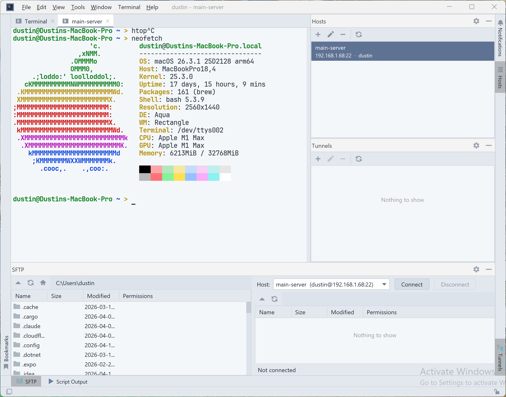
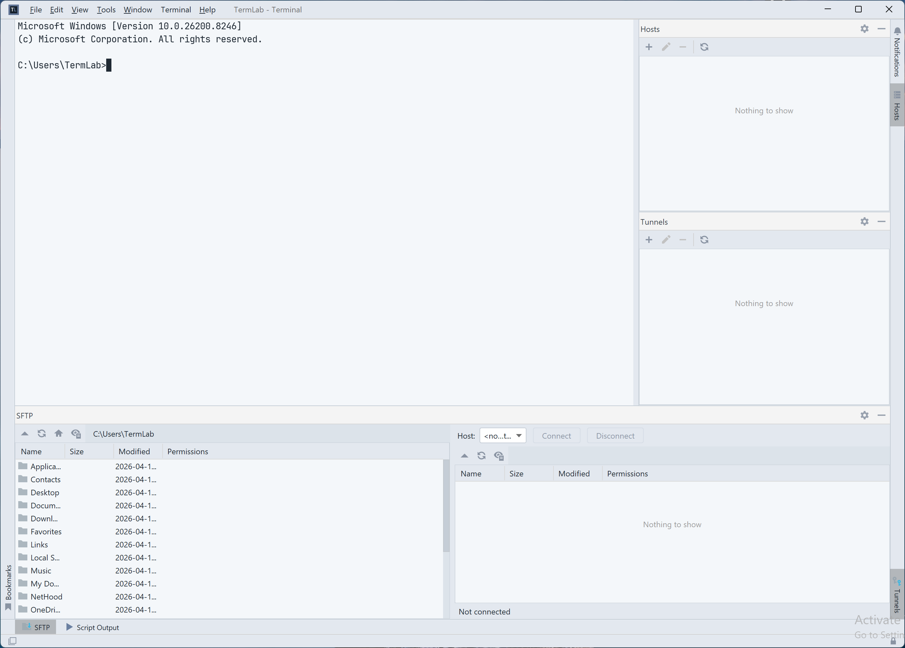
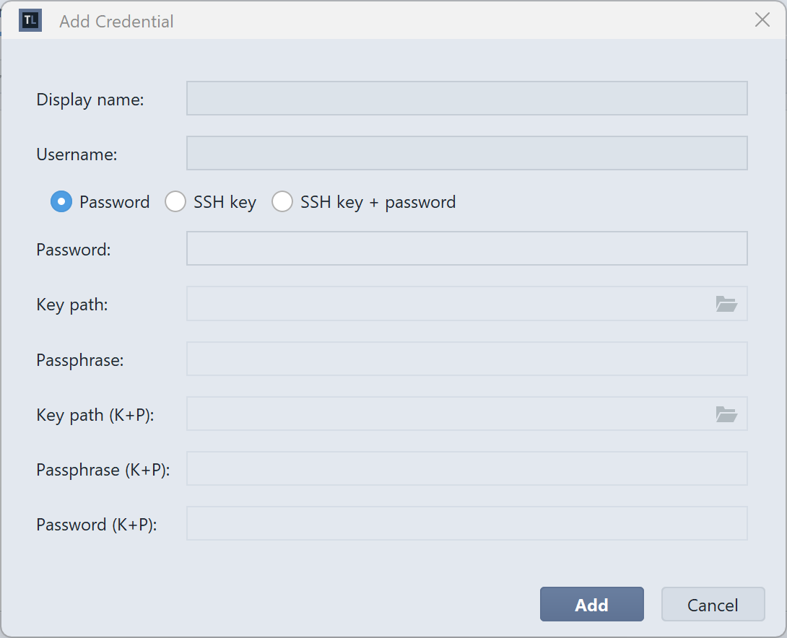
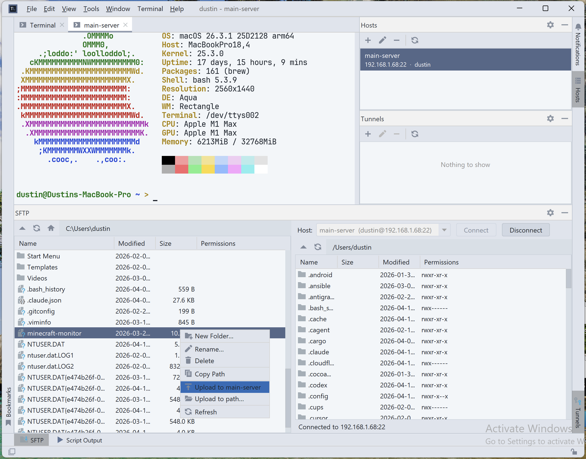
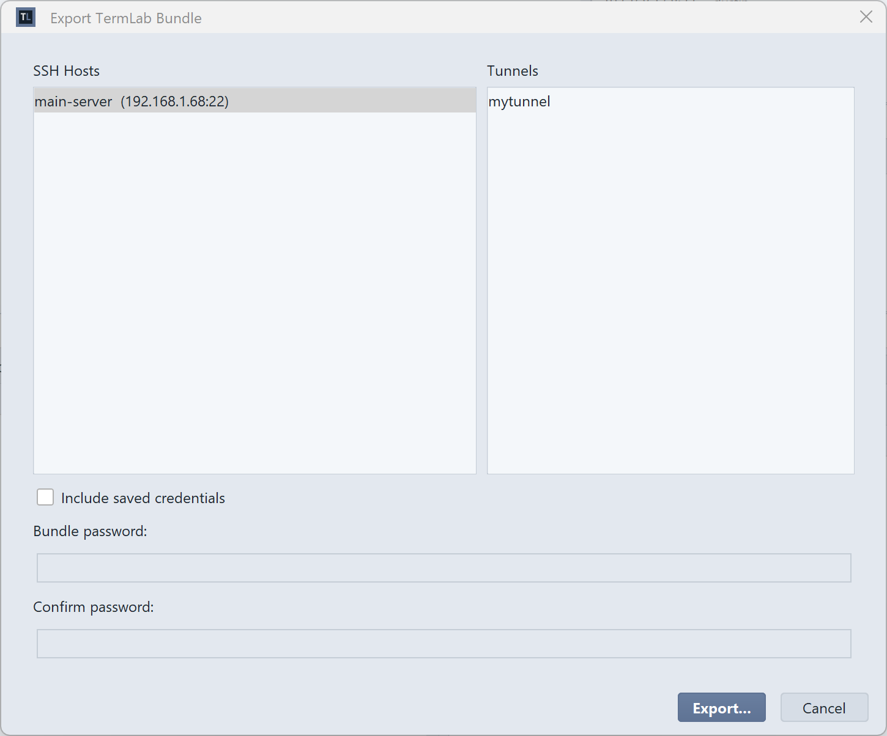
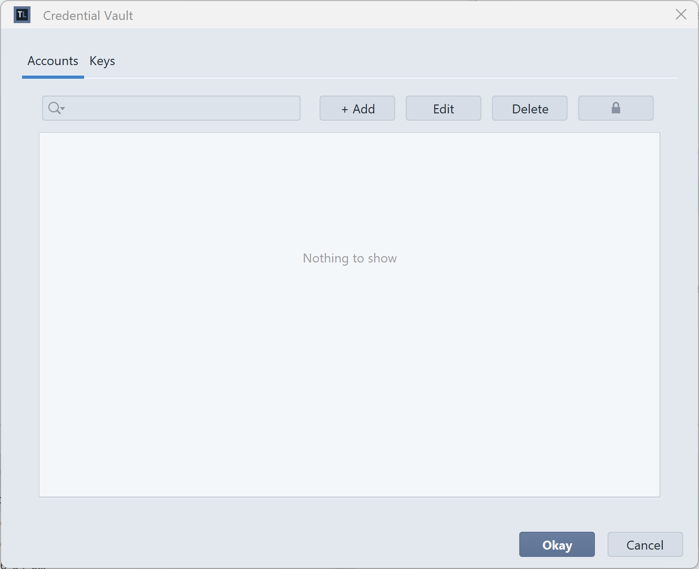
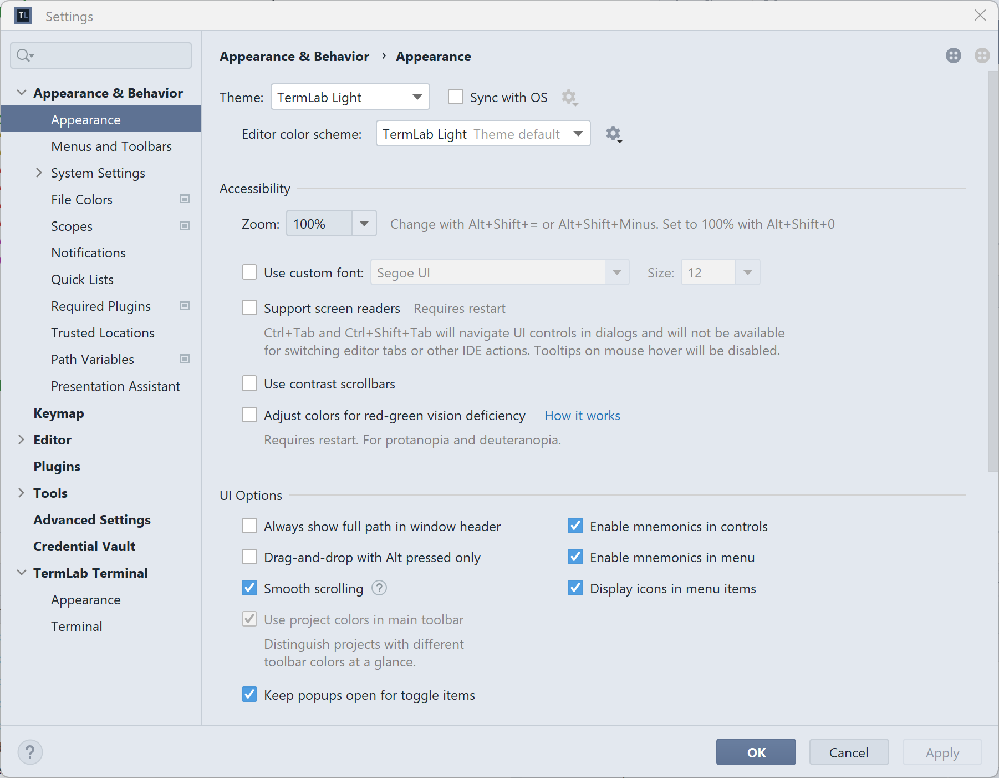

> 01 · connect
Every host, one keystroke away.
Command Palette opens a session instantly. Tabs, splits, and saved terminals feel native because they are.

> termlab latest
SSH, SFTP, tunnels, and an encrypted vault — in one desktop app. Share your whole setup as one file.
GitHub latest macOS · Linux · Windows

> 01 · connect
Command Palette opens a session instantly. Tabs, splits, and saved terminals feel native because they are.


> 02 · secure
Passwords, SSH keys, and passphrases in an encrypted vault. Generate keys inside it, reuse them across hosts.
> 03 · transfer
Dual-pane SFTP sits inside the same window as your terminal. Drag, drop, right-click upload — no separate app.


> 04 · share
Export hosts, tunnels, keys, and credentials into a password-protected bundle. Your teammate imports it and they're in.
.termlab · password-protected · nobody else does this
> inside

